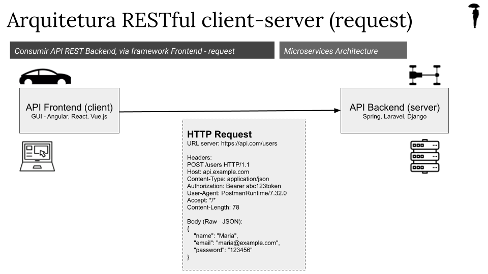

Arquitetura API backend (server) e frontend (client), com tecnologias independentes, que comunicam-se via HTTP Request (headers e bodies com verbos REST) e HTTP Response (headers e bodies com verbos REST).
Postman é ferramenta para consumir API Backend (server), substituindo parte Frontend REST (client) na arquitetura client-server, dispensando API Frontend REST GUI. Dessa forma, permite enviar HTTP header/body Requests e analisar HTTP header/body Responses do server API Backend REST. Exemplo de API REST pública online: https://jsonplaceholder.typicode.com.
{
"name": "João",
"email": "joao@example.com"
}
<user>
<name>João</name>
<email>joao@example.com</email>
</user>
Exemplo HTTP Request - Respose:
{
"name": "Maria",
"email": "maria@example.com",
"password": "123456"
}
{
"id": 101,
"name": "Maria",
"email": "maria@example.com",
"status": "created"
}
Permite envio de HTTP Requests, com configuração de headers, body, authorization, parâmetros de URL, cookies, etc. Possibilita criação e organização de collections de requests, variáveis de ambiente (environments), gestão de configurações para diferentes estágios (desenvolvimento, homologação e produção) e colaboração simultânea (user groups). Permite também automatizar testes via scripts JavaScript, criar fluxos de trabalho com Runner, monitorar APIs em tempo real e integrar com ferramentas como Jenkins e Newman para pipelines de CI/CD, export snippeds de código via curl, relatório de Requests, gestão de erros simplificada, IA integrada Postbot, integração de Mock Servers e Monitors, audit logs e reports. Além disso, conta com vasta Store de APIs para integração e publicação.
Elaborado por Mateus Schwede
ubsocial.github.io